下列图只来自本补充目录已有文件，保留原图标签与完整对象页面；不按恢复表现挑选。相同名称PDF只作下载。
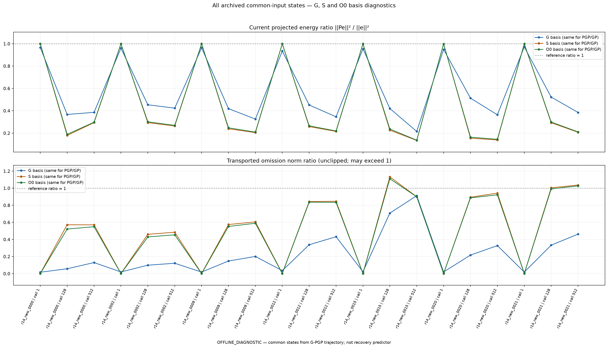
ALL21_CURRENT_ENERGY_AND_TRANSPORTED_OMISSIONanalysis/fixed_state_summary/ALL21_CURRENT_ENERGY_AND_TRANSPORTED_OMISSION.pngPDF下载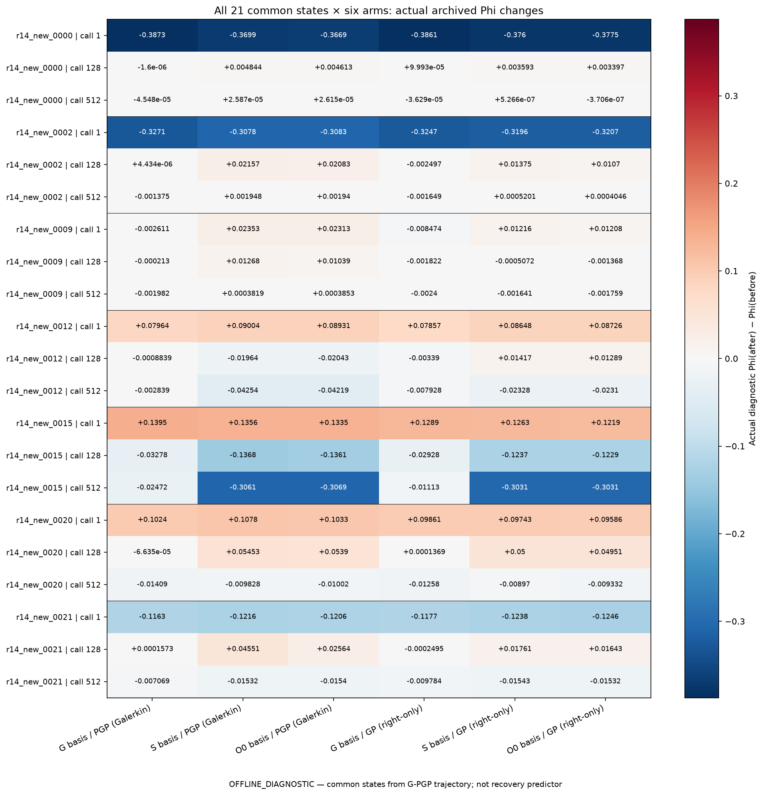
ALL21_SIX_ARM_PHI_CHANGESanalysis/fixed_state_summary/ALL21_SIX_ARM_PHI_CHANGES.pngPDF下载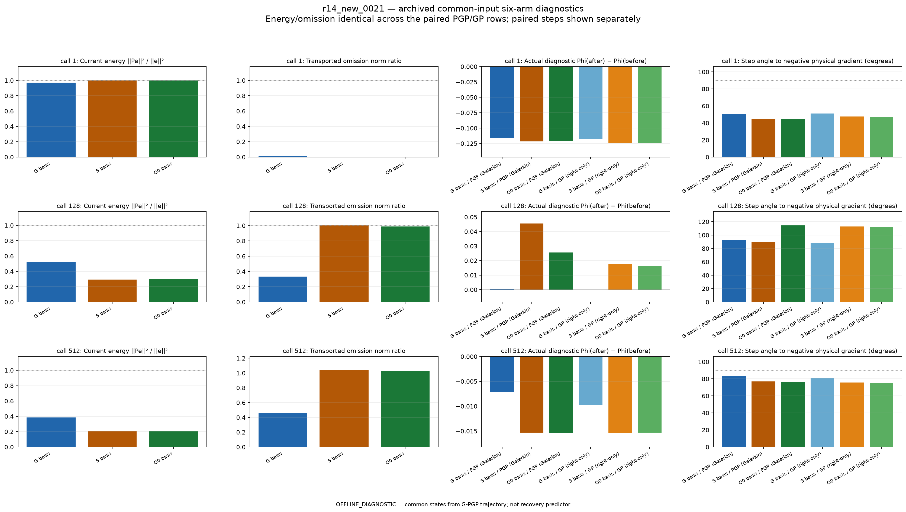
R14_NEW_0021_COMMON_STATE_DIAGNOSTICSanalysis/fixed_state_summary/R14_NEW_0021_COMMON_STATE_DIAGNOSTICS.pngPDF下载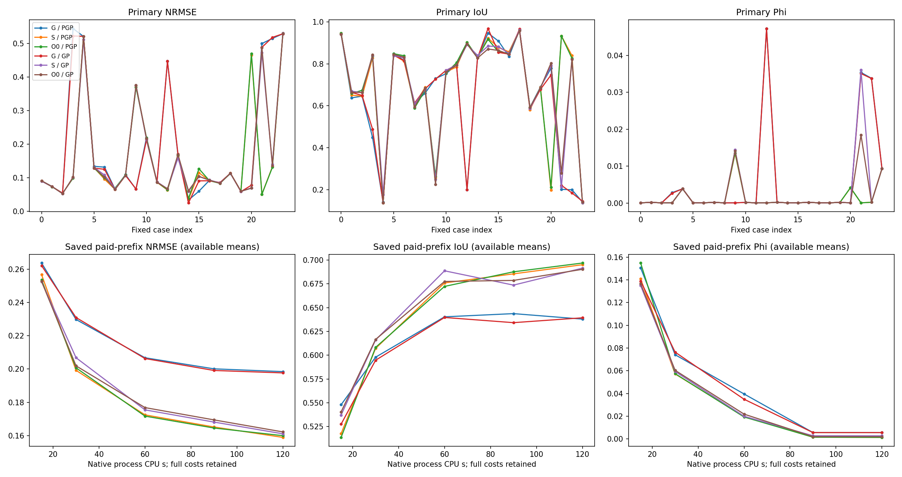
continuous_and_cost_curvesanalysis/observable19_v1/figures/continuous_and_cost_curves.png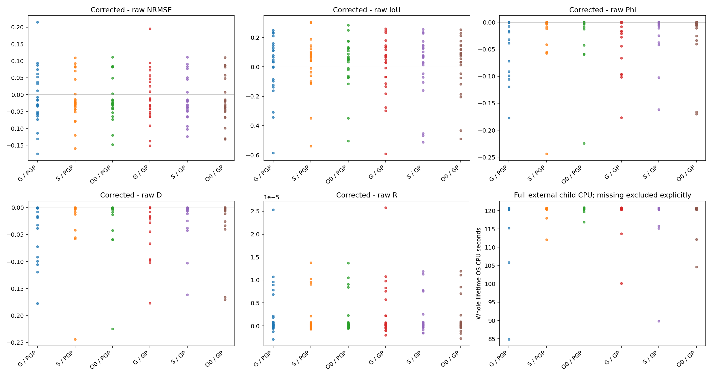
corrector_effects_and_actual_costsanalysis/observable19_v1/figures/corrector_effects_and_actual_costs.png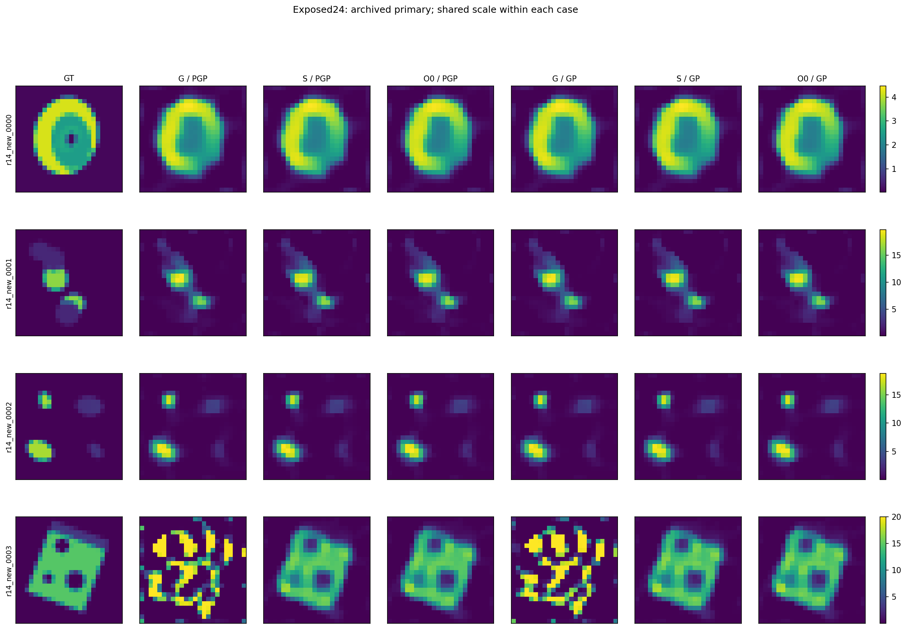
materials_00_03analysis/observable19_v1/figures/materials_00_03.png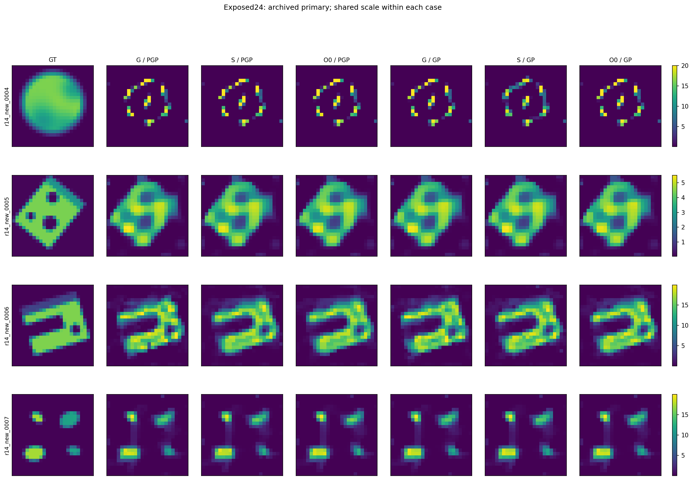
materials_04_07analysis/observable19_v1/figures/materials_04_07.png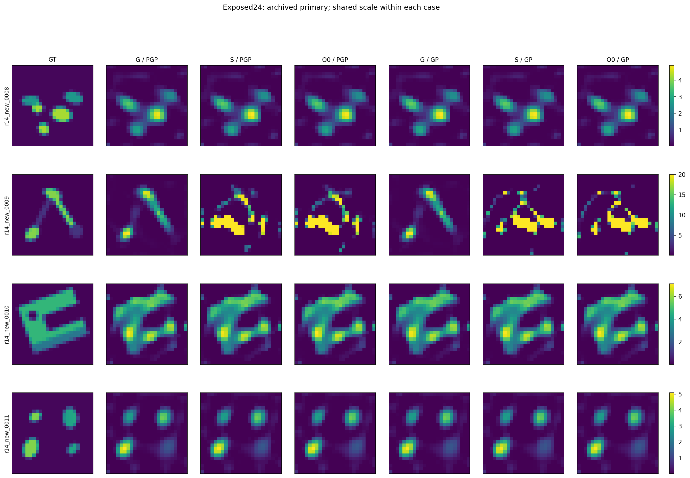
materials_08_11analysis/observable19_v1/figures/materials_08_11.png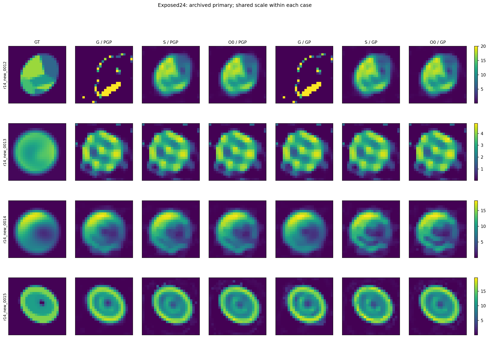
materials_12_15analysis/observable19_v1/figures/materials_12_15.png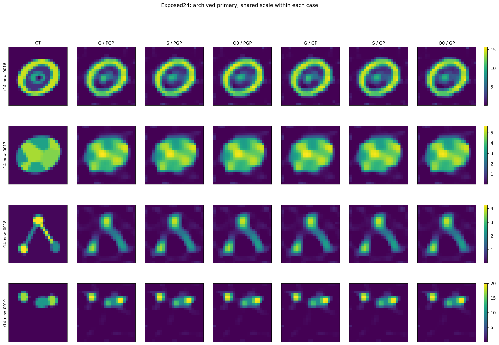
materials_16_19analysis/observable19_v1/figures/materials_16_19.png materials_20_23analysis/observable19_v1/figures/materials_20_23.png
materials_20_23analysis/observable19_v1/figures/materials_20_23.png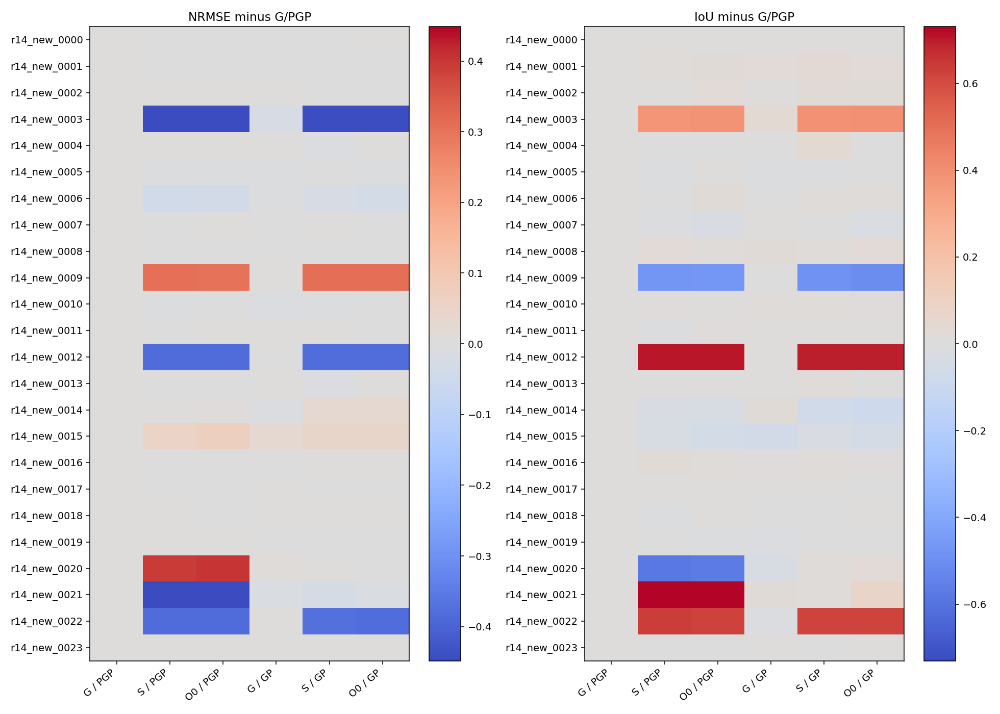
paired_metric_differencesanalysis/observable19_v1/figures/paired_metric_differences.png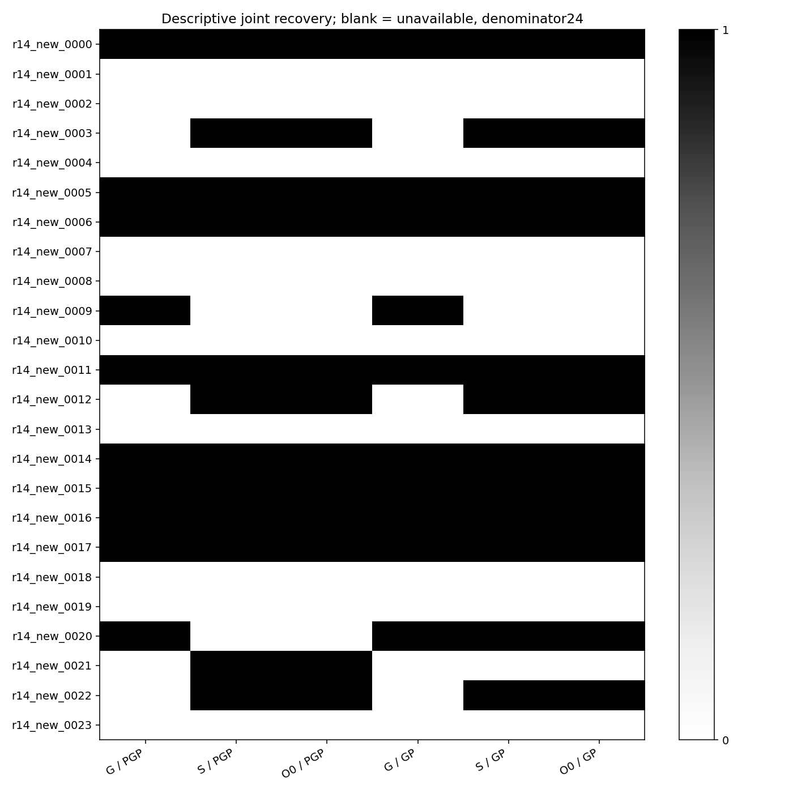
recovery_membershipanalysis/observable19_v1/figures/recovery_membership.png